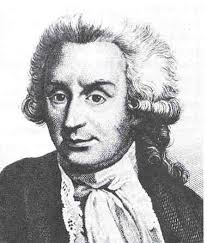
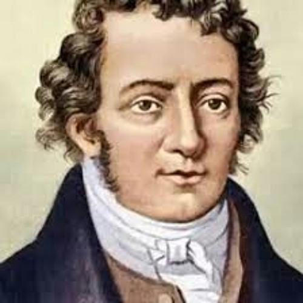
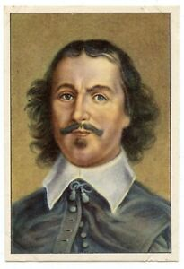

Personajes Históricos |
Stephen Gray |
André Marie Ampére |
Otto Von Guericke |
|  |  |  |
|
Fue el primero en identificar la existencia de dos tipos de cargas eléctricas (positivo y negativo). |
Descubrió que una corriente eléctrica desviaba una aguja imantada situada en sus proximidades. Si la corriente eléctrica era capaz de hacer girar la aguja imantada. |
Fue el primer creador de la primera maquina electrostática capaz de producir descargas eléctricas |